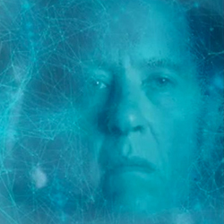

| Home | The Doctors | The Companions | The Villains |
|
|||
|
The Great IntelligenceThe Great Intelligence is a deadly parasite – a malevolent force lacking corporeal form that uses human beings as its servants, sometimes willingly, but often against its victim’s wishes. Before racing away to find Clara, the Doctor stared at Doctor Simeon’s business card and the name printed on it stirred a memory. ‘The Great Intelligence…’ he murmured. ‘Rings a bell...’ The recollection is because the Time Lord has confronted the Intelligence on two previous occasions…The Doctor first encountered the Great Intelligence in Asia during the mid-twentieth century. Investigating a Himalayan monastery he had visited centuries earlier, he was shocked to discover that his good friend Padmasambhava was still alive but was now over three hundred years old! The Second Doctor discovered he had been taken over by the Great Intelligence – an evil, mysterious force that was using him against his will. Now, the dream outlives the dreamer and can never die! The Great IntelligenceDuring this adventure the Doctor learnt very little about his new enemy and even the question of how it had arrived on Earth was largely unanswered. Padmasambhava suggested he had been taken over by the Intelligence as he had somehow travelled on an alternative plane and hinted that this shapeless, alien force was conducting an experiment in the Himalayas, striving to find a way to perfect ‘material form’ . On this occasion the Intelligence used mechanical Yetis (pictured, right) and these furry but fearsome robots were deployed again when it invaded Earth decades later. The Doctor was there to defeat them again but this time the front-line was the London Underground. In the intervening period the Intelligence had apparently failed to perfect corporeal form and the Doctor said the best way to describe it was ‘a sort of formless, shapeless thing floating about in space like a cloud of mist, only with a mind and will’. This time the Intelligence seemed more cunning and used a member of Britain’s military as an inside agent. The force was also able to attack the TARDIS whilst it was in outer space, cocooning the craft in a web-like substance that almost disabled it forever. The Doctor was able to trick the Intelligence and cut it off from the humans and machinery it was using on Earth.
|